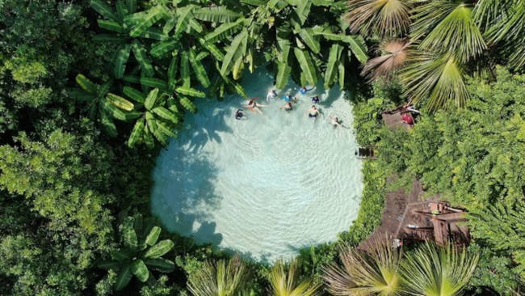

O Jalapão é um dos destinos turísticos mais conhecidos do Tocantins.
A região possui uma grande diversidade de paisagens naturais, incluindo rios de águas cristalinas, serras, cachoeiras e os famosos fervedouros.
Além das belezas naturais, o Jalapão também se destaca pela produção do artesanato feito com o capim-dourado, um dos símbolos culturais do estado.
Os fervedouros recebem esse nome porque a pressão da água impede que as pessoas afundem.
Visitar a página inicial